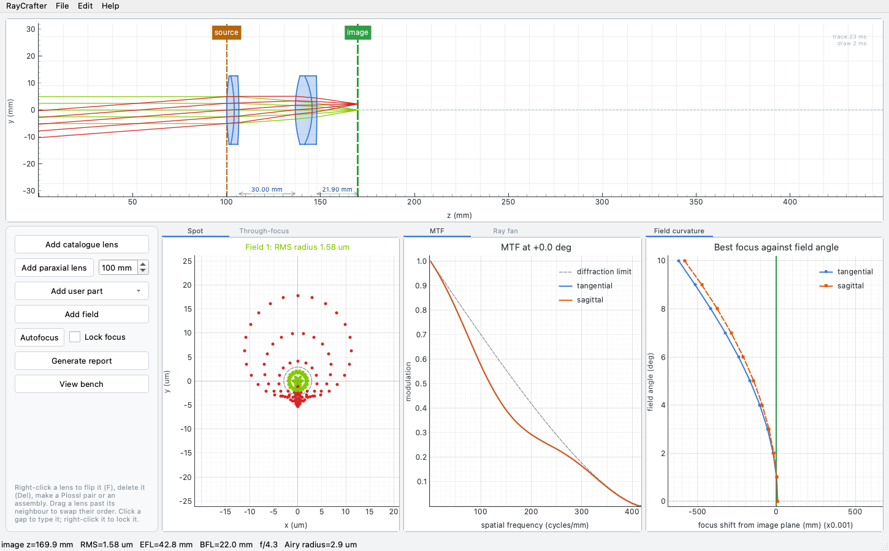
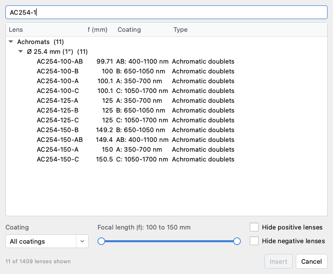

A tour
What is on the screen, and how to use it.
The window
The top half is the side view: lenses on an optical axis, with rays travelling left to right and a green dashed line for the image plane. The bottom row has the control panel on the left, then three groups of plots. A line along the bottom gives the image position, RMS spot size, focal length (EFL), back focal length, f-number and Airy radius.


Adding and moving lenses
- Click Add catalogue lens to open the lens picker. Type part of a part number in the search box
(for example
AC254), or filter by coating and focal length. Select a lens and click Insert. - Click on the axis to put the lens where you want it. Esc or right-click cancels.
- Drag a lens along the axis; the plots follow. Drag it past its neighbour to swap their order.
- Right-click a lens to flip it, delete it, or make a Plossl pair.
- For an ideal lens, set a focal length next to Add paraxial lens and click the button.
- Autofocus moves the image plane to the best-focus position; tick Lock focus to keep it there as you move lenses.


Fields (beams)
Click Add field to open the field window. Each field is a beam with its own width, angle, vergence, offset, wavelength and colour. Use + and − to add and remove fields, and click one to select it. The spot diagram and rays show every field; the MTF and ray fan show the selected field.

Analysis plots
- Spot: where the rays land on the image plane, with the Airy disc circle for comparison.
- Through-focus: how the spot size changes as the image plane moves.
- MTF: modulation transfer function of the selected field, against the diffraction limit.
- Ray fan: ray error across the pupil.
- Field curvature: best-focus position against field angle.
Fast plots update as you drag. The slower ones (MTF, ray fan, field curvature) fade while you drag and refresh when you stop.

Files and reports
The File menu can start a new design and save or load Zemax .zmx files. Generate report
writes an HTML report of the current design. Note that ZMX files cannot hold everything RayCrafter does, and RayCrafter treats some things differently from Zemax; see
how lenses work compared with Zemax and
known problems.